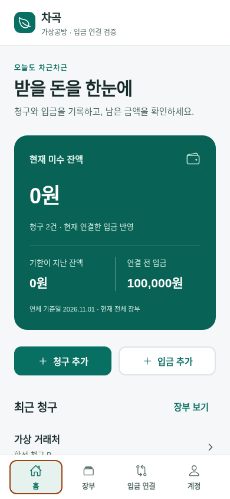

BACKEND PROJECT
차곡
미수금·입금 확인
후불 청구와 실제로 기록한 입금을 검토하고,
사람이 연결한 금액만 서버 미수 잔액에 반영합니다.
Java 21 · Spring BootPostgreSQL · FlywayReact Native · Expo · TypeScript
어떤 문제를 다루나요?
작은 사업의 후불 거래에서는 나눠 들어온 입금, 여러 청구를 합친 입금, 비슷한 입금자명 때문에 청구와 입금을 연결하기 어렵습니다.
합계나 이름이 같다는 사실을 개별 거래 확정으로 바꾸지 않고, 원본·후보·현재 잔액을 확인한 사용자가 명시적으로 연결하도록 만들었습니다.
핵심 사용 흐름
- 거래처·청구·입금 등록
- 날짜 범위의 규칙 후보와 근거 검토
- 부분·묶음·분할 연결 초안 구성
- 서버 잔액 재조회 후 별도 확정
- 미수 확인, 사유 있는 취소와 복구

잔액 계산과 확정은 서버에서 처리합니다.
원화 정수로 계산하고, 연결 확정·취소를 하나의 트랜잭션으로 저장합니다. 같은 요청의 재전송과 동시에 들어오는 요청도 검사합니다.
개발 과정에서 분석·구현·검토에 AI 에이전트를 활용했습니다.
DESIGN DECISIONS & EVIDENCE
핵심 설계와 검증
| 예상 오류 | 선택한 설계·검증 |
|---|
| 같은 입금을 동시에 배분 | payment → invoice UUID 정렬 잠금 후 현재 잔액 검사. 초과 요청은 전체 rollback. |
| 응답을 못 받아 재전송 | tenant 범위 키·요청 hash·원래 결과를 같은 트랜잭션으로 보관. 모바일은 같은 정규화 입력의 키를 유지. |
| 취소 뒤 예전 응답을 현재로 표시 | 불변 명령 snapshot과 현재 GET을 분리. 취소는 원본 삭제 없이 별도 사실과 감사 이벤트로 기록. |
| 실패한 실행이 무료 횟수를 사용 | 후보 결과·승인 월·고유 usage event·counter를 한 commit에 결합. 월 행 잠금으로 마지막 1회 경쟁을 제어. |
| 다른 사업체 자료에 접근 | 활성 Bearer 세션과 membership 확인, tenant SQL 조건 및 복합 FK. 기존 전역 자료는 자동 귀속하지 않음. |
기록된 검증 근거
| 백엔드 186개 | 전용 PostgreSQL 테스트 DB 회귀·통합 검사, 실패·오류·스킵 0 |
| 클라이언트 13개 | 키·세션·확정 조건·날짜·금액 검사, 타입 및 웹 export 통과 |
| 실제 브라우저 9 + 9 | 새 연결 흐름과 기존 코어를 실제 Java API로 검증, 페이지 오류 0 |
| 독립 fixture 11개 | 모의 응답을 이용한 경합·불확실한 응답·재생/현재 상태 경계. 실제 금융 계산 검증과 구분 |
2026-11-01 검증 기록
확인할 자료
GitHub 소스·README · 저장소의 docs/PORTFOLIO.md, architecture.md, receivables-erd.md
시연 영상: docs/demo/receivables-demo.mp4 · 실행·녹화 재현 방법은 docs/demo/README.md
다음 작업
모바일 CSV 가져오기, iPhone·Android 실기기 확인, 앱인토스 적용을 준비하고 있습니다.